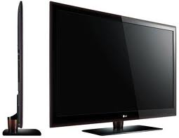

Cars:
My prediction of technology is that the car industry will revoulutionize cars, every car will turn into floating or flying cars. They will be electric, no need for gas anymore. I also believe there will be floating/flying trains, etc.
Cellphones:
All cellphones will go all touch screen, there will be no number dials; it'll be as if they never exsisted. I believe it'll give us the advantage of being able to keep organized and get a control over life. Some experts predict that the mobiles will become remote controls for us throught out our whole lives, while others predict that the mobile phones will literally run our lives.
Televisions:
Televisions will, as well be all touch screen. Television will be mostly 3D. There will be no dvd's or cassettes, all you'll need to do is touch the screen and pic a movie that you would like to watch. It may be possible that we won't have to pay for tv services like comcast, well maybe not.They'll also be able to watch tv on your watch.
|  |